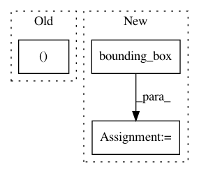

3bd246cd752d34d50d016a63c7950bd2b28071cf,doc/examples/segment_corpus_callosum_from_rgb.py,,,#,33
Before Change
from dipy.segment.mask import segment_from_dwi
threshold = (0.7, 1, 0, 0.1, 0, 0.1)
roi = (30, 50, 35, 80, 25, 50)
CC_box = np.zeros_like(data[..., 0])
CC_box[roi[0]:roi[1], roi[2]:roi[3], roi[4]:roi[5]] = 1
After Change
threshold = (0.7, 1, 0, 0.1, 0, 0.1)
CC_box = np.zeros_like(data[..., 0])
mins, maxs = bounding_box(mask)
mins = np.array(mins)
maxs = np.array(maxs)
diff = (maxs - mins) // 4
bounds_min = mins + diff
In pattern: SUPERPATTERN
Frequency: 3
Non-data size: 3
Instances
Project Name: nipy/dipy
Commit Name: 3bd246cd752d34d50d016a63c7950bd2b28071cf
Time: 2013-09-11
Author: Samuel.St-Jean@usherbrooke.ca
File Name: doc/examples/segment_corpus_callosum_from_rgb.py
Class Name:
Method Name:
Project Name: nipy/dipy
Commit Name: 8d1cf5355cf2d67485740fcb531e54dd09fc0f49
Time: 2013-09-11
Author: Samuel.St-Jean@usherbrooke.ca
File Name: doc/examples/segment_corpus_callosum_from_rgb.py
Class Name:
Method Name:
Project Name: kevinzakka/recurrent-visual-attention
Commit Name: 6d75aef13998df68bf940c01212b1826380832dc
Time: 2017-11-23
Author: kevinarmandzakka@gmail.com
File Name: main.py
Class Name:
Method Name: main